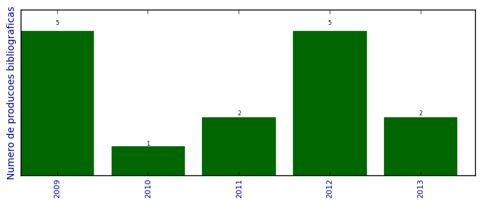

UFSM - Análise do Lattes
Total de produção bibliográfica

Número total de itens: 15
2013
| 1. | CANTARELLI, G. S. ; PEREIRA, H. G. G. ; LIBRELOTTO, G. R. ; PIVETA, E.. Um Processo para Busca em Código Fonte Orientado a Aspectos com uso de Ontologias. Revista do CCEI. 2013. [ citações Google Scholar | citações Microsoft Acadêmico | busca Google ] |
| 2. | Freitas, Leandro ; PEREIRA, RAFAEL T. ; Pereira, Henrique G. G. ; Martini, Ricardo ; Mozzaquatro, Bruno A. ; KASPER, JEFERSON ; Librelotto, Giovani. Ontological Representation and an Architecture for Homecare Pervasive Systems. Em: Rui Rijo, Ricardo Martinho, Joao Varajao. (Org.). Information Systems and Technologies for Enhancing Health and Social Care. 1ed.Hershley. : Medical Information Science Reference. 2013.v. 1, p. 215-234. [ citações Google Scholar | citações Microsoft Acadêmico | busca Google ] |
2012
| 1. | FREITAS, LEANDRO O. ; LIBRELOTTO, GIOVANI R. ; PEREIRA, HENRIQUE G.G. ; KASPER, JEFERSON ; MARTINI, RICARDO G. ; MOZZAQUATRO, BRUNO ; PEREIRA, RAFAEL T.. Applying Pervasive Computing in an Architecture for Homecare Environments. Em: 2012 IEEE 9th Int'l Conference on Ubiquitous Intelligence Computing / 9th Int'l Conference on Autonomic Trusted Computing (UIC/ATC), 2012.  [ citações Google Scholar | citações Microsoft Acadêmico | busca Google ] Qualis: Não identificado (2012 IEEE 9th Int'l Conference on Ubiquitous Intelligence Computing / 9th Int'l Conference on Autonomic Trusted Computing (UIC/ATC)) |
| 2. | FREITAS, LEANDRO O. ; PEREIRA, RAFAEL T. ; PEREIRA, HENRIQUE G.G. ; MARTINI, RICARDO G. ; MOZZAQUATRO, BRUNO ; KASPER, JEFERSON ; LIBRELOTTO, GIOVANI RUBERT. A Methodology for an Architecture of Pervasive Systems to Homecare Environments. Procedia Technology. v. 5, p. 820-829, 2012. [ citações Google Scholar | citações Microsoft Acadêmico | busca Google ] Qualis: Não identificado (Procedia Technology) |
| 3. | Mozzaquatro, B. A. ; Gubiani, J. ; PEREIRA, H. G. G. ; DE CARLI, D. M ; CORREA, B. B. ; POSSATI, A. ; COLUSSO, G.. Comparativo entre Serviços usando a API Geolocation integrado ao HTML5. Em: III Encontro Anual de Tecnologia da Informação, 2012, Frederico W.. Anais do III Encontro Anual de Tecnologia da Informação, 2012. [ citações Google Scholar | citações Microsoft Acadêmico | busca Google ] Qualis: Não identificado (III Encontro Anual de Tecnologia da Informação, 2012, Frederico W.. Anais do III Encontro Anual de Tecnologia da Informação) |
| 4. | PEREIRA, H. G. G. ; LIBRELOTTO, G. R.. Arcp: Uma arquitetura para a utilização de computação nas nuvens nos ambientes de computação pervasiva. 1 ed. 2012. v. 1. 98p , . [ citações Google Scholar | citações Microsoft Acadêmico | busca Google ] |
| 5. | PEREIRA, H. G. G. ; LIBRELOTTO, G. R.. Definição de uma Arquitetura para o Uso de Computação nas Nuvens em Ambientes de Computação Pervasiva. Em: XXXIX Seminário Integrado de Software e Hardware, 2012. [ citações Google Scholar | citações Microsoft Acadêmico | busca Google ] Qualis: B4 (Seminário Integrado de Software e Hardware) |
2011
| 1. | PEREIRA, H. G. G.. How to code like the killer rabbit of Caerbannog. 2011. Apresentação de Trabalho/Conferência ou palestra |
| 2. | PEREIRA, H. G. G. ; ECKHARTD, R.. BogoSort e Técnicas Avançadas de Programação. 2011. Apresentação de Trabalho/Congresso |
2010
| 1. | PEREIRA, H. G. G.. Como não programar em Python. 2010. Apresentação de Trabalho/Conferência ou palestra |
2009
| 1. | PEREIRA, H. G. G.. O Software Livre no Mundo do MicroBlogging. 2009. Apresentação de Trabalho/Conferência ou palestra |
| 2. | PEREIRA, H. G. G.. Welcome to the Django. 2009. Apresentação de Trabalho/Conferência ou palestra |
| 3. | PEREIRA, H. G. G. ; CASSAL, M. L. ; DHEIN, G. ; PINTO, T. R.. Geolocalização com o Google Maps e Redes Sem Fio. Em: Simpósio de Informática da Região Centro, 2009. [ citações Google Scholar | citações Microsoft Acadêmico | busca Google ] Qualis: Não identificado (Simpósio de Informática da Região Centro) |
| 4. | PEREIRA, H. G. G. ; TURCHETTI, R. C.. Um Gerenciador para Redes Wireless Open Source com Localização Física de Dispositivos. 2009. Apresentação de Trabalho/Simpósio |
| 5. | PEREIRA, H. G. G. ; TURCHETTI, R. C. ; PASSETO, L. F. ; BAGGIO, J. E. ; LIBRELOTTO, G. R.. Utilizando o Gerenciador de Rede WICD Com Localização Física de Dispositivos. Em: Fórum Internacional do Software Livre, p. 109-114, 2009. [ citações Google Scholar | citações Microsoft Acadêmico | busca Google ] Qualis: Não identificado (Fórum Internacional do Software Livre) |
(*) Relatório criado com produções desde 2009 até HOJE
Data de processamento: 11/04/2014 11:08:16